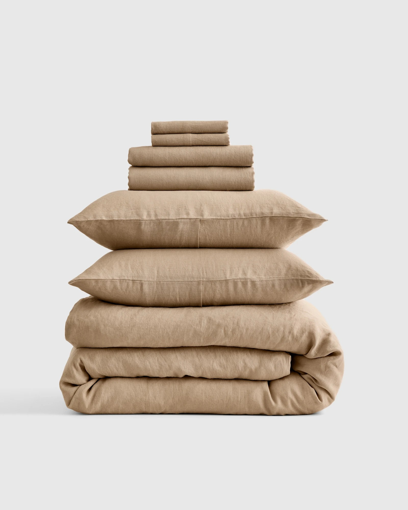
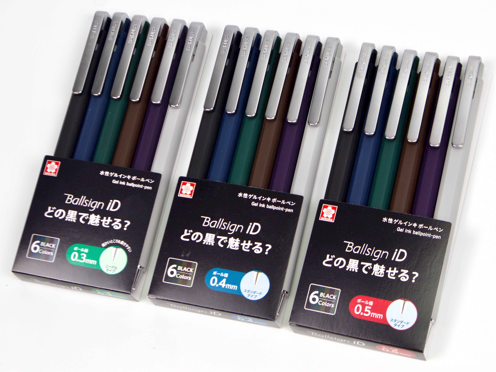
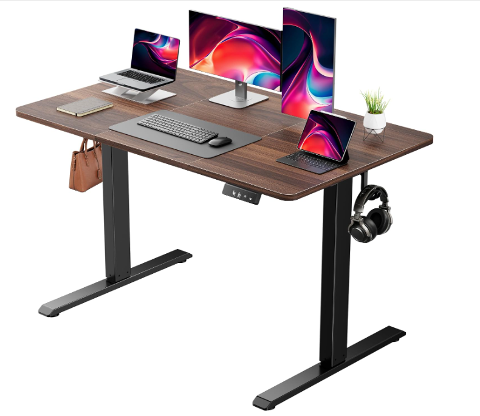
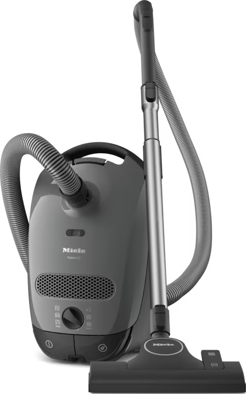
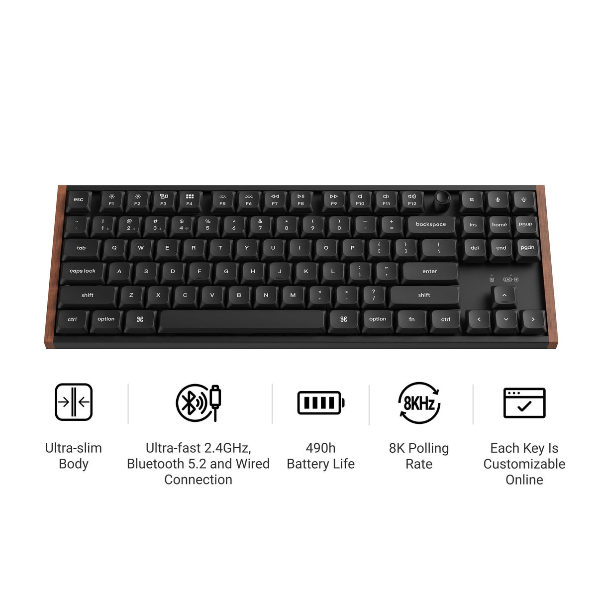

100% European Linen Deluxe Bedding Bundle in Toffee
$340
I would like to have some proper linens, not just some dog ass I bought from target on the first night. King size

$340
I would like to have some proper linens, not just some dog ass I bought from target on the first night. King size

44.00 USD
Nice stationary for when I write notes at work or in my personal notebook. I have one pen, but it's runnnig out of ink and would like more.


$399
This is a high priority item on my christmas list. I would use this for all of my vacuum needs instead of the half baked hand vacuums

$109.99
I've been using a flat keyboard at work recently have have been really liking it. Since I've been doing more personal projects at home on my desktop and laptop, I want to be able to travel with the keyboard with bluetooth and wired.